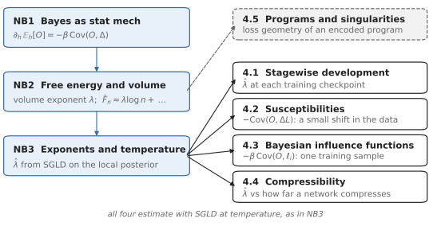
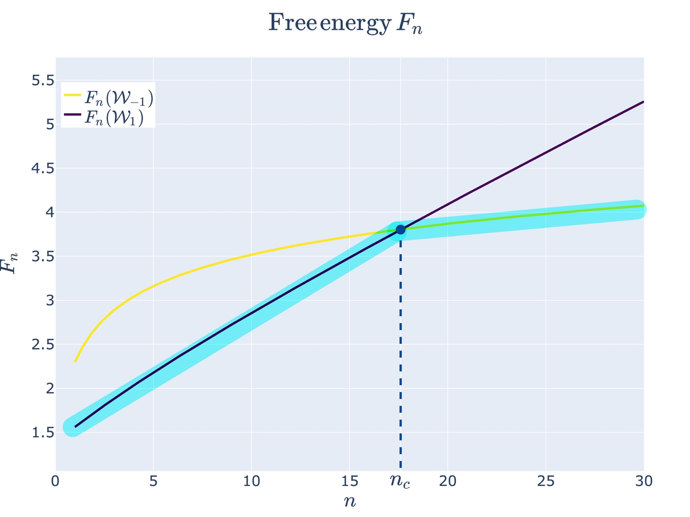
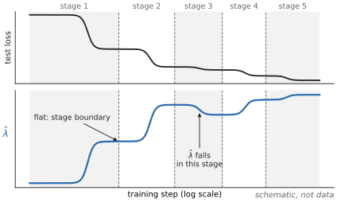

SLT Notebook 4 — Applications
Singular Learning Theory, Iliad Intensive 2026
To run the code, open slt4_applications.ipynb in Jupyter (CPU only; needs Python 3). Every code cell's output is shown on this page; exercise solutions are folded under Solution.
These notebooks are a backup. Read the blog posts first: Liam Carroll’s Distilling Singular Learning Theory (DSLT 0–4), Jesse Hoogland’s Neural networks generalize because of this one weird trick and, with Stan van Wingerden, You’re Measuring Model Complexity Wrong; then Zach Furman’s Singular learning theory: exercises. Come here for a derivation, a worked exercise, or code to check something.
Question: what has been done with the local learning coefficient and the sampler of Notebook 3?
Notation: \hat\lambda is the local learning coefficient (LLC), estimated from SGLD samples of the tempered posterior near the trained weights (Notebook 3).

Sections 4.1–4.4 each compute something from SGLD samples of the local posterior (Notebook 3); 4.5 is a separate line of work on loss geometry.
Route. 4.1 Stagewise development · 4.2 Susceptibilities · 4.3 Bayesian influence functions · 4.4 Compressibility · 4.5 Programs and singularities
4.1 Stagewise development and phase transitions
What this is: the posterior switches basin at a critical sample size, where a basin with lower loss but a larger learning coefficient takes over (Notebook 2 §2.3). These papers look for such switches, and for stages in training.

Figure from Liam Carroll, DSLT 4. Phase Transitions in Neural Networks (LessWrong, 2023): the free energies of two regions cross at a critical sample size n_c, and the posterior moves to the lower one.

A sketch, not data: the LLC estimated along one training run, with stage boundaries (dashed) where its curve is flat.
Dynamical versus Bayesian Phase Transitions in a Toy Model of Superposition, Chen, Lau, Mendel, Wei & Murfet (2023)
In a toy autoencoder, predicts the posterior’s basin switches from the loss and learning coefficient of its polygon-shaped critical points, and finds that the same critical points organise SGD training.
Loss Landscape Degeneracy and Stagewise Development in Transformers, Hoogland, Wang, Farrugia-Roberts, Carroll, Wei & Murfet (TMLR 2025)
Estimates the LLC at checkpoints of two small transformers and splits training into stages at its plateaus, which line up with changes in what the model computes.
Differentiation and Specialization of Attention Heads via the Refined Local Learning Coefficient, Wang, Hoogland, van Wingerden, Furman & Murfet (ICLR 2025)
Restricts the LLC to one component’s weights or to a subset of the data, and follows attention heads as they specialise (also arXiv:2410.02984).
4.2 Susceptibilities
What this is: how much does a posterior average move when the data shift slightly? Add a small term h\Delta to the energy nL_n and differentiate, as in Notebook 1 §1.1. For any observable O the answer is a covariance:
\frac{\partial}{\partial h}\,\mathbb E_h[O]\Big|_{h=0}=-\beta\,\mathrm{Cov}_\beta(O,\Delta), \qquad \mathbb E_h \text{ under } \propto\varphi\,e^{-\beta(nL_n+h\Delta)} ,
with \beta the inverse temperature and \varphi the prior, both held fixed. This response is a susceptibility. For a shift in the data, the perturbation is n times the change in average loss; Baker et al. divide the derivative by n\beta, which leaves minus the covariance with that change. It is estimated with SGLD.
Structural Inference: Interpreting Small Language Models with Susceptibilities, Baker, Wang, Hoogland & Murfet (2025)
Measures the susceptibility of each component of a small transformer to shifts toward different kinds of data; the low-rank structure of the result separates functional modules.
Towards Spectroscopy: Susceptibility Clusters in Language Models, Gordon, Baker, Wang, Snell, van Wingerden & Murfet (2026)
Upweights one token in one context and clusters tokens by their susceptibilities, grouping tokens predicted for similar reasons, in a 14M-parameter model.
4.3 Bayesian influence functions
What this is: which training samples does a quantity depend on? The classical influence function needs an inverse Hessian, which does not exist when the Hessian is degenerate. Taking the perturbation in §4.2 to be the loss on one training sample gives a covariance, with no Hessian.
Bayesian Influence Functions for Hessian-Free Data Attribution, Kreer, Wu, Adam, Furman & Hoogland (2025)
Defines this Bayesian influence function, estimates it with SGLD, and scales it to large models.
The Loss Kernel: A Geometric Probe for Deep Learning Interpretability, Adam, Furman & Hoogland (2025)
Uses the posterior covariance of per-sample losses as a similarity between data points, and compares it with the ImageNet class hierarchy.
4.4 Minimum description length and compressibility
What this is: at \beta=1 the free energy is the length of the data under the Bayesian mixture code (for continuous data, up to a fixed-precision term), so the \lambda\log n term of Notebook 2 is a description-length cost. Does the LLC predict how far a trained network can be compressed?
Compressibility Measures Complexity: Minimum Description Length Meets Singular Learning Theory, Urdshals, Lau, Hoogland, van Wingerden & Murfet (2025)
Extends minimum description length to models with degenerate minima and reports, on the Pythia models, that the LLC tracks (sometimes linearly) how compressible a network is.
4.5 Programs and singularities
What this is: a line of work relating the structure of a Turing machine to the loss geometry of a model that encodes it.
Geometry of Program Synthesis, Clift, Murfet & Wallbridge (2021)
Sets up the synthesis of Turing machines as Bayesian inference, so that programs appear as singularities of the loss.
Programs as Singularities, Murfet & Troiani (2025)
Relates the structure of a Turing machine to the Taylor expansion of the loss at the critical point that encodes it.